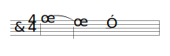
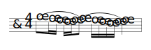
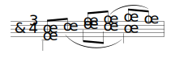
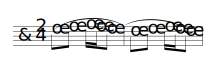
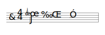
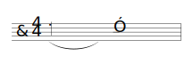

Tables of Signs
Basic Signs
Table 13. The Slur (Pars. 13.1 – 13.10.2)
| Simple short slur |  | |
| Doubled long slur |

|
|
| Bracket long slur |

|
|
| Convergent short slurs |

|
|
| Convergent long slurs (bracket) |  | |
| Slur from part to part |  | |
| Long slur from part to part |

|
|
| * Continuation of part-to-part slur | ||
| Transfer of slur between staves |

|
|
| Destination of slur transferred between staves | ||
| Straight line between staves |

|
|
| End of straight line between staves | ||
| The half phrase |  | |
| Slur for short appoggiatura (facsimile) |  | |
| Slur that does not come from a note |

|
|
| Slur that does not lead to a note |  |